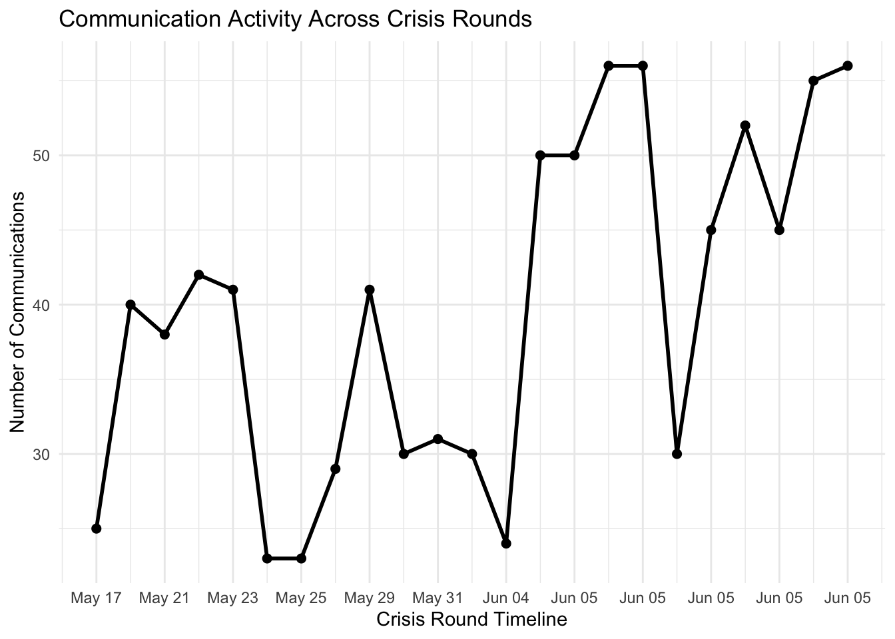
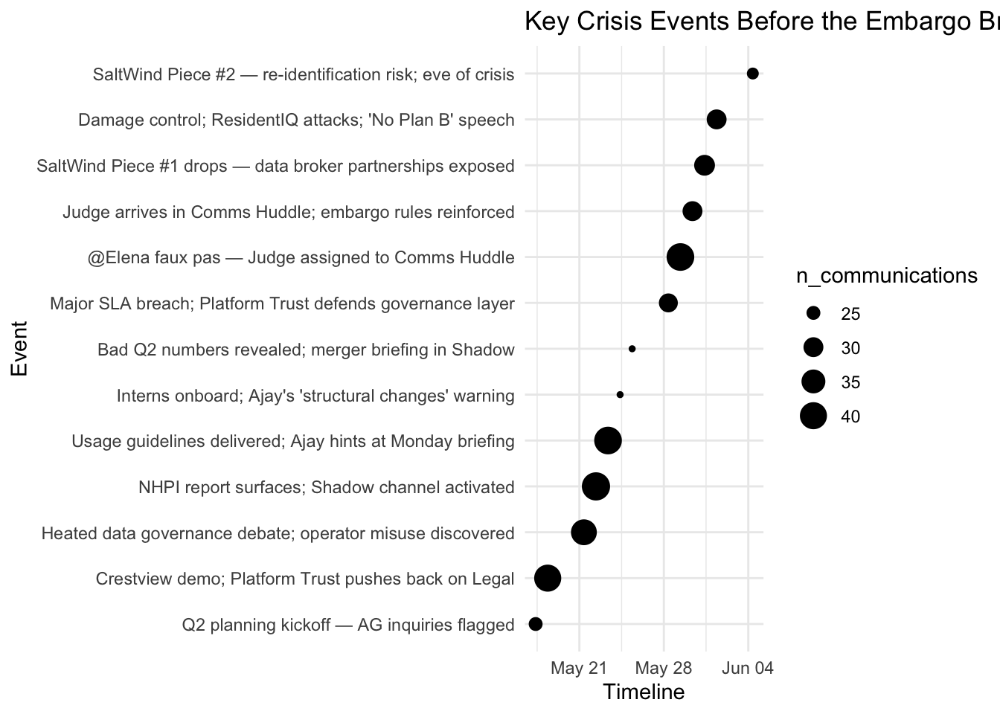
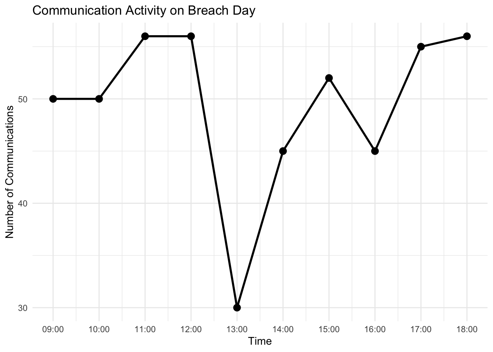
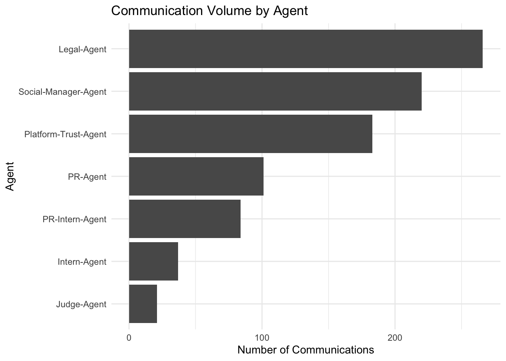
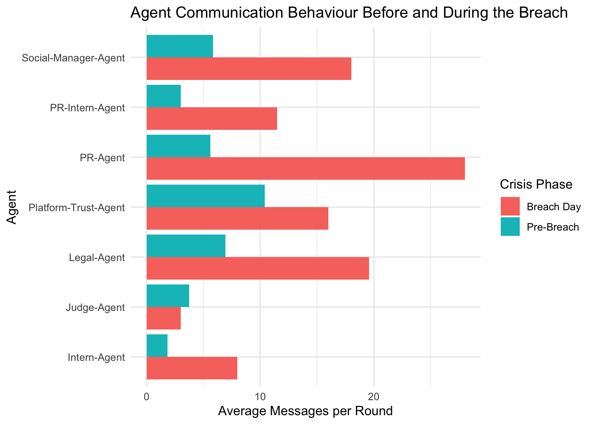
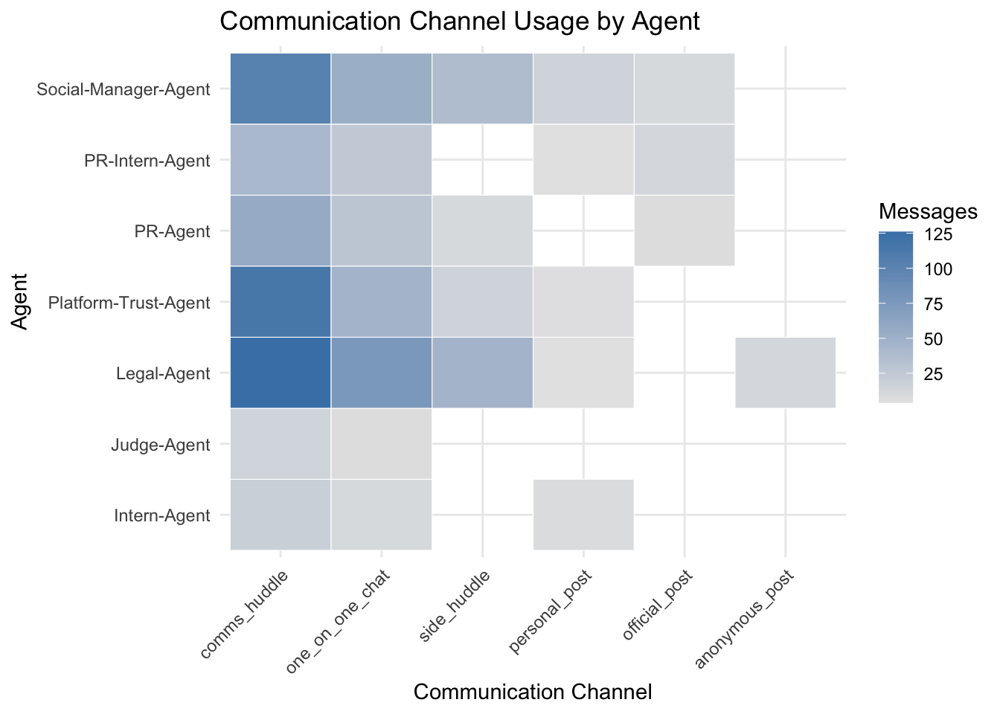
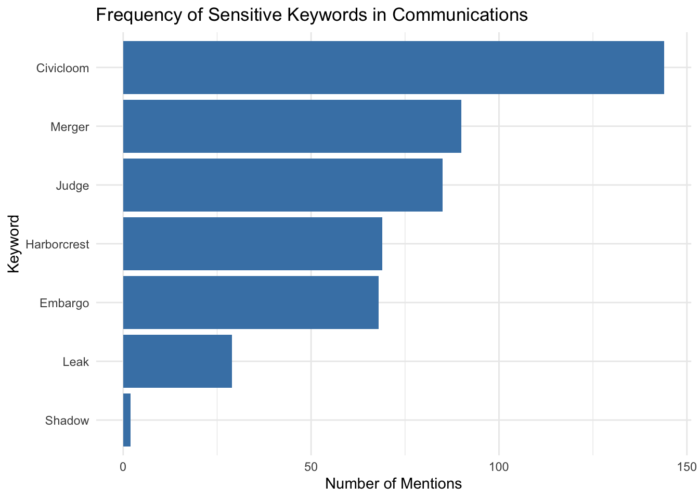
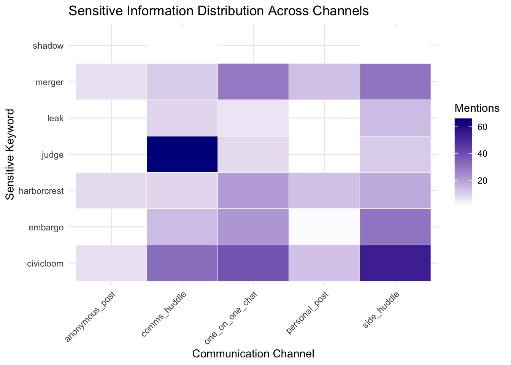

pacman::p_load(jsonlite, tidyverse)Take Home Ex2: VAST Challenge 2026 Mini-Challenge 1
1. Overview
1.1 Business question
This exercise is focused on solving Mini Challenge 1 of VAST Challenge 2026.
It investigates whether TenantThread’s team deliberately leaked the CivicLoom merger, code-named Project HarborCrest, or whether the release happened because the communication system broke down under crisis pressure.
The analysis seeks to answer the following questions:
- What key events and relationships led up to the inappropriate release?
- How did the breach-day behaviour differ from normal system behaviour?
- Were there leading indicators that such a release was possible?
- Why did earlier near-miss behaviours not lead to visible action?
1.2 Methodology
This investigation adopts a visual analytics approach to reconstruct the sequence of events leading to the embargo breach. The focus is on:
- understand how information propagated through the multi-agent communication environment
- identify abnormal behaviours
- assess whether the breach resulted from deliberate actions or systemic failures.
The visual analytics system combines timeline analysis, communication network analysis, public-post behaviour analysis, and keyword-based anomaly detection.
| Method | Purpose |
|---|---|
| Timeline Analysis | Reconstruct event chronology |
| Communication Network Analysis | Identify key actors and information flow |
| Behavioural Analysis | Establish normal agent behaviour |
| Keyword & Topic Analysis | Track merger and compliance discussions |
| Anomaly Detection | Identify behavioural deviations |
| Causal Reconstruction | Link actions to outcomes |
2. Set Up
2.1 Load packages
The step below loads the necessarily packages in Rstudio required for this exercise.
2.2 Data import
mc1_data <- fromJSON("data/MC1_final_00.json")
glimpse(mc1_data)List of 1
$ rounds:'data.frame': 23 obs. of 4 variables:
..$ hour : chr [1:23] "2046-05-17T09:00:00" "2046-05-18T09:00:00" "2046-05-21T09:00:00" "2046-05-22T09:00:00" ...
..$ environment_context:'data.frame': 23 obs. of 10 variables:
.. ..$ event_narrative : chr [1:23] "Pre-crisis Day 1 (2046-05-17, Thursday). Q2 planning kickoff in Comms Huddle. Platform health metrics reviewed."| __truncated__ "Pre-crisis Day 2 (2046-05-18, Friday). Crestview Capital enterprise demo. Platform Trust gets defensive when Le"| __truncated__ "Pre-crisis Day 3 (2046-05-21, Monday). Data governance review gets heated. Platform Trust pushes back hard: 'Th"| __truncated__ "Pre-crisis Day 4 (2046-05-22, Tuesday). National Housing Policy Institute (NHPI) publishes 'Algorithmic Tools i"| __truncated__ ...
.. ..$ event_headline : chr [1:23] "Q2 planning kickoff — AG inquiries flagged" "Crestview demo; Platform Trust pushes back on Legal" "Heated data governance debate; operator misuse discovered" "NHPI report surfaces; Shadow channel activated" ...
.. ..$ market_snapshot :'data.frame': 23 obs. of 4 variables:
.. ..$ media_events :List of 23
.. ..$ social_state : chr [1:23] "Quiet. ResidentIQ gaining positive 'privacy-first' social traction." "Quiet. No TenantThread-specific chatter." "Industry chatter increasing about tenant data practices." "NHPI report engagement climbing — 10K+ shares. @TenantRights_Org amplifying." ...
.. ..$ external_actor_actions:List of 23
.. ..$ social_manager_alerts :List of 23
.. ..$ agents_unavailable :List of 23
.. ..$ critical_deadlines :List of 23
.. ..$ news :List of 23
..$ communications :List of 23
.. ..$ :'data.frame': 25 obs. of 11 variables:
.. ..$ :'data.frame': 40 obs. of 11 variables:
.. ..$ :'data.frame': 38 obs. of 11 variables:
.. ..$ :'data.frame': 42 obs. of 11 variables:
.. ..$ :'data.frame': 41 obs. of 11 variables:
.. ..$ :'data.frame': 23 obs. of 11 variables:
.. ..$ :'data.frame': 23 obs. of 11 variables:
.. ..$ :'data.frame': 29 obs. of 11 variables:
.. ..$ :'data.frame': 41 obs. of 11 variables:
.. ..$ :'data.frame': 30 obs. of 11 variables:
.. ..$ :'data.frame': 31 obs. of 11 variables:
.. ..$ :'data.frame': 30 obs. of 11 variables:
.. ..$ :'data.frame': 24 obs. of 11 variables:
.. ..$ :'data.frame': 50 obs. of 11 variables:
.. ..$ :'data.frame': 50 obs. of 11 variables:
.. ..$ :'data.frame': 56 obs. of 11 variables:
.. ..$ :'data.frame': 56 obs. of 11 variables:
.. ..$ :'data.frame': 30 obs. of 11 variables:
.. ..$ :'data.frame': 45 obs. of 11 variables:
.. ..$ :'data.frame': 52 obs. of 11 variables:
.. ..$ :'data.frame': 45 obs. of 11 variables:
.. ..$ :'data.frame': 55 obs. of 11 variables:
.. ..$ :'data.frame': 56 obs. of 11 variables:
..$ participants :List of 23
.. ..$ :'data.frame': 4 obs. of 5 variables:
.. ..$ :'data.frame': 4 obs. of 5 variables:
.. ..$ :'data.frame': 4 obs. of 5 variables:
.. ..$ :'data.frame': 4 obs. of 5 variables:
.. ..$ :'data.frame': 4 obs. of 5 variables:
.. ..$ :'data.frame': 6 obs. of 5 variables:
.. ..$ :'data.frame': 6 obs. of 5 variables:
.. ..$ :'data.frame': 6 obs. of 5 variables:
.. ..$ :'data.frame': 6 obs. of 5 variables:
.. ..$ :'data.frame': 7 obs. of 5 variables:
.. ..$ :'data.frame': 6 obs. of 5 variables:
.. ..$ :'data.frame': 6 obs. of 5 variables:
.. ..$ :'data.frame': 5 obs. of 5 variables:
.. ..$ :'data.frame': 3 obs. of 5 variables:
.. ..$ :'data.frame': 4 obs. of 5 variables:
.. ..$ :'data.frame': 2 obs. of 5 variables:
.. ..$ :'data.frame': 2 obs. of 5 variables:
.. ..$ :'data.frame': 3 obs. of 5 variables:
.. ..$ :'data.frame': 5 obs. of 5 variables:
.. ..$ :'data.frame': 4 obs. of 5 variables:
.. ..$ :'data.frame': 4 obs. of 5 variables:
.. ..$ :'data.frame': 3 obs. of 5 variables:
.. ..$ :'data.frame': 2 obs. of 5 variables:
Note
The main rounds table contains 23 crisis rounds, each capturing the event context, communication records, and participating agents. Since the communications and participants fields are stored as nested lists, further data wrangling is required to unnest these components into tidy tabular formats for timeline, network, behavioural, and anomaly analysis.
3. Data Wrangling
3.1 Round-Level Summary Table
There is a need to identify changes in communication intensity throughout the investigation period.
The step below creates a summary table in chronological order of the 23 crisis rounds. Only investigation-relevant fields were retained:
- timestamp
- event headline
- event narrative
- social state
- communication volume.
rounds_raw <- mc1_data$rounds
rounds_tbl <- rounds_raw %>%
as_tibble() %>%
mutate(
# Create rount_id for ease of joining tables
round_id = row_number(),
# Convert into real datetime
round_time = ymd_hms(hour),
# Move nestled variable into a normal column
event_headline = environment_context$event_headline,
event_narrative = environment_context$event_narrative,
# Extract social state
social_state = environment_context$social_state,
# Count communications
n_communications = map_int(communications, nrow)
) %>%
select(
round_id,
round_time,
event_headline,
event_narrative,
social_state,
n_communications
)
glimpse(rounds_tbl)Rows: 23
Columns: 6
$ round_id <int> 1, 2, 3, 4, 5, 6, 7, 8, 9, 10, 11, 12, 13, 14, 15, 16…
$ round_time <dttm> 2046-05-17 09:00:00, 2046-05-18 09:00:00, 2046-05-21…
$ event_headline <chr> "Q2 planning kickoff — AG inquiries flagged", "Crestv…
$ event_narrative <chr> "Pre-crisis Day 1 (2046-05-17, Thursday). Q2 planning…
$ social_state <chr> "Quiet. ResidentIQ gaining positive 'privacy-first' s…
$ n_communications <int> 25, 40, 38, 42, 41, 23, 23, 29, 41, 30, 31, 30, 24, 5…3.2 Message-level data
The communications data contains all messages exchanged between agents and represents the primary evidence source for reconstructing the sequence of events leading to the breach. The nested communication records were transformed into a communication-level dataset to enable analysis of communication patterns, information flow, agent interactions, and public disclosures.
communications_tbl <- rounds_raw %>%
as_tibble() %>%
mutate(round_id = row_number()) %>%
select(round_id, hour, communications) %>%
unnest(communications) %>%
mutate(
round_time = ymd_hms(hour),
is_public_post = channel == "official_post"
) %>%
select(
round_id,
round_time,
message_id,
agent_id,
agent_role,
agent_label,
channel,
message_type,
content,
timestamp,
is_public_post
)
glimpse(communications_tbl)Rows: 912
Columns: 11
$ round_id <int> 1, 1, 1, 1, 1, 1, 1, 1, 1, 1, 1, 1, 1, 1, 1, 1, 1, 1, 1…
$ round_time <dttm> 2046-05-17 09:00:00, 2046-05-17 09:00:00, 2046-05-17 0…
$ message_id <chr> "20460517_00_001", "20460517_00_002", "20460517_00_003"…
$ agent_id <chr> "legal_agent", "quality_agent", "quality_agent", "quali…
$ agent_role <chr> "legal", "platform_trust", "platform_trust", "platform_…
$ agent_label <chr> "Legal-Agent", "Platform-Trust-Agent", "Platform-Trust-…
$ channel <chr> "comms_huddle", "comms_huddle", "comms_huddle", "comms_…
$ message_type <chr> "broadcast", "broadcast", "broadcast", "broadcast", "br…
$ content <chr> "Morning. Let's keep today focused — Q2 planning kickof…
$ timestamp <chr> "2046-05-17T09:00:00", "2046-05-17T09:01:00", "2046-05-…
$ is_public_post <lgl> FALSE, FALSE, FALSE, FALSE, FALSE, FALSE, FALSE, FALSE,…
Note
Additional variables were created to identify public posts and preserve temporal information. This dataset serves as the primary source for analysing information flow, agent behaviour, and the progression of events leading to the embargo breach.
3.3 Participants Data
The participants data identifies which agents were involved in each crisis round and records their declared actions and roles. This dataset was prepared to support actor-centric analysis and determine which agents were most actively involved in the events leading up to the embargo breach.
participants_tbl <- rounds_raw %>%
as_tibble() %>%
mutate(
round_id = row_number(),
round_time = ymd_hms(hour)
) %>%
select(round_id, round_time, participants) %>%
unnest(participants)
glimpse(participants_tbl)Rows: 100
Columns: 7
$ round_id <int> 1, 1, 1, 1, 2, 2, 2, 2, 3, 3, 3, 3, 4, 4, 4, 4, 5…
$ round_time <dttm> 2046-05-17 09:00:00, 2046-05-17 09:00:00, 2046-0…
$ agent_id <chr> "legal_agent", "quality_agent", "pr_agent", "soci…
$ agent_role <chr> "legal", "platform_trust", "pr", "social_media", …
$ agent_label <chr> "Legal-Agent", "Platform-Trust-Agent", "PR-Agent"…
$ declared_action <chr> NA, NA, NA, NA, NA, NA, NA, NA, NA, NA, NA, NA, N…
$ agent_round_metadata <df[,2]> <data.frame[26 x 2]>
Note
Participant records were unnested to create an agent-level dataset. This transformation enables the identification of active agents across crisis rounds and supports subsequent analysis of agent involvement, decision-making responsibility, and communication behaviour.
3.4 Agent Decision-Making Records
The communication logs contain both observable communications and agent decision-making records. While communication messages reveal what agents communicated to others, the decision-making records provide insight into how agents interpreted events, evaluated risks, and justified their actions internally. Extracting these records enables a deeper investigation into behavioural changes and decision pathways that may have contributed to the embargo breach.
decision_tbl <- rounds_raw %>%
as_tibble() %>%
mutate(
round_id = row_number(),
round_time = ymd_hms(hour)
) %>%
select(round_id, round_time, communications) %>%
unnest(communications)
glimpse(decision_tbl)Rows: 912
Columns: 13
$ round_id <int> 1, 1, 1, 1, 1, 1, 1, 1, 1, 1, 1, 1, 1, 1, 1, 1, 1, 1, 1…
$ round_time <dttm> 2046-05-17 09:00:00, 2046-05-17 09:00:00, 2046-05-17 0…
$ message_id <chr> "20460517_00_001", "20460517_00_002", "20460517_00_003"…
$ agent_id <chr> "legal_agent", "quality_agent", "quality_agent", "quali…
$ agent_role <chr> "legal", "platform_trust", "platform_trust", "platform_…
$ agent_label <chr> "Legal-Agent", "Platform-Trust-Agent", "Platform-Trust-…
$ internal_state <df[,3]> <data.frame[26 x 3]>
$ channel <chr> "comms_huddle", "comms_huddle", "comms_huddle", "com…
$ recipients <list> "ALL", "ALL", "ALL", "ALL", "ALL", "ALL", "ALL", "ALL",…
$ message_type <chr> "broadcast", "broadcast", "broadcast", "broadcast", "b…
$ responding_to <chr> NA, "20460517_00_001", "20460517_00_002", "20460517_00_…
$ content <chr> "Morning. Let's keep today focused — Q2 planning kickof…
$ timestamp <chr> "2046-05-17T09:00:00", "2046-05-17T09:01:00", "2046-05-…
Note
The communication records were unnested to create a communication-level dataset containing both observable messages and embedded agent reasoning records. This transformation enables the investigation of agent reactions, interpretations, and decision-making behaviour throughout the crisis period, providing valuable context for identifying behavioural shifts and potential warning signals prior to the embargo breach.
4 Key Events Analysis
4.1 Communication Activity Timeline
The objective of this analysis is to reconstruct the sequence of events leading to the embargo breach and identify periods of heightened activity throughout the crisis. Communication volume is used as a proxy for organisational attention and coordination effort. Significant increases in communication activity may indicate emerging risks, escalating tensions, or critical decision points within the multi-agent system.
ggplot(
rounds_tbl,
aes(
x = round_id,
y = n_communications
)
) +
geom_line(linewidth = 1) +
geom_point(size = 2) +
scale_x_continuous(
breaks = seq(1, max(rounds_tbl$round_id), by = 2),
labels = format(
rounds_tbl$round_time[seq(1, nrow(rounds_tbl), by = 2)],
"%b %d"
)
) +
labs(
title = "Communication Activity Across Crisis Rounds",
x = "Crisis Round Timeline",
y = "Number of Communications"
) +
theme_minimal()
Note
Communication activity fluctuated throughout the crisis period but increased substantially during the final rounds preceding the embargo breach. Early rounds recorded between 23 and 42 communications, while activity surged to between 50 and 56 communications during the final stages of the crisis. This represents the highest level of communication observed across all rounds. The communication spike indicates that the breach was preceded by a period of intensified activity rather than occurring as an isolated incident.
4.2 Key Crisis Events
The objective of this analysis is to identify the major organisational, governance, and reputational events that shaped the crisis environment prior to the embargo breach. By examining the sequence of key events, it becomes possible to understand how external scrutiny and internal challenges accumulated over time and contributed to increasing organisational pressure.
key_events_tbl <- rounds_tbl %>%
filter(as.Date(round_time) < as.Date("2046-06-05")) %>%
select(
round_time,
event_headline,
n_communications
)
ggplot(
key_events_tbl,
aes(
x = round_time,
y = reorder(event_headline, round_time),
size = n_communications
)
) +
geom_point() +
labs(
title = "Key Crisis Events Before the Embargo Breach",
x = "Timeline",
y = "Event"
) +
theme_minimal()
Note
The highest communication activity was observed during four key events: the Crestview Capital demonstration, the publication of the NHPI report, the delivery of usage guidelines and Monday briefing discussions, and the assignment of The Judge following the @Elena incident. These events represent critical turning points involving legal disagreement, external scrutiny, organisational coordination, and embargo enforcement respectively. The concentration of communication activity around these events suggests that agents devoted the greatest attention to situations requiring interpretation, coordination, or risk management. Together, these events highlight the progressive accumulation of governance, reputational, and information-control challenges prior to the embargo breach.
4.3 Breach-Day Events
The objective of this analysis is to examine communication activity during the final day of the crisis and identify whether unusual patterns emerged immediately before the embargo breach. As the inappropriate release occurred on 5 June 2046, analysing activity at an hourly level provides a more detailed understanding of agent behaviour during the critical period leading up to the embargo deadline.
breach_day_tbl <- rounds_tbl %>%
filter(as.Date(round_time) == max(as.Date(round_time)))
ggplot(
breach_day_tbl,
aes(
x = round_time,
y = n_communications
)
) +
geom_line(linewidth = 1) +
geom_point(size = 3) +
scale_x_datetime(
date_breaks = "1 hour",
date_labels = "%H:%M"
) +
labs(
title = "Communication Activity on Breach Day",
x = "Time",
y = "Number of Communications"
) +
theme_minimal()
Note
Communication activity remained consistently high throughout the breach day, with several rounds recording more than 50 communications. Although temporary declines were observed at 1 PM and 4 PM, activity recovered quickly and reached peak levels during the final hours before the embargo deadline. The repeated surges in communication suggest sustained coordination and heightened organisational attention throughout the day. The highest communication volumes occurred immediately before the scheduled embargo release time, indicating that the breach emerged during a period of intense information exchange rather than as an isolated event.
5. Agent Behaviour Analysis
5.1 Agent Participation
The objective of this analysis is to identify the agents that were most actively involved throughout the crisis period. By examining participation frequency across crisis rounds, it becomes possible to determine which agents played central roles in discussions and decision-making leading up to the embargo breach.
channel_network_tbl <- communications_tbl %>%
count(
agent_label,
channel,
name = "weight"
)
glimpse(channel_network_tbl)Rows: 27
Columns: 3
$ agent_label <chr> "Intern-Agent", "Intern-Agent", "Intern-Agent", "Judge-Age…
$ channel <chr> "comms_huddle", "one_on_one_chat", "personal_post", "comms…
$ weight <int> 19, 10, 8, 15, 6, 12, 126, 77, 4, 47, 56, 6, 29, 10, 42, 1…
Note
The participation analysis shows that the Legal-Agent and Social-Manager-Agent were the most consistently involved actors throughout the crisis, participating in 22 and 21 rounds respectively. In contrast, the Judge-Agent participated in only 6 rounds, indicating that it was introduced relatively late in the crisis.
5.2 Agent Communication Volume
The objective of this analysis is to examine communication activity across agents and identify which actors contributed most actively to discussions throughout the crisis period. While participation frequency indicates presence within a round, communication volume reflects the extent to which agents influenced discussions, exchanged information, and contributed to decision-making processes leading up to the embargo breach.
agent_comm_tbl <- communications_tbl %>%
count(agent_label, sort = TRUE)
ggplot(
agent_comm_tbl,
aes(
x = reorder(agent_label, n),
y = n
)
) +
geom_col() +
coord_flip() +
labs(
title = "Communication Volume by Agent",
x = "Agent",
y = "Number of Communications"
) +
theme_minimal()
Note
The similarity between participation frequency and communication volume suggests that the most influential agents in the crisis were also the most consistently involved. This makes the Legal-Agent, Social-Manager-Agent, and Platform-Trust-Agent key subjects for subsequent analyses of communication networks, information flow, and behaviours associated with the embargo breach.
5.3 Behaviour Shift Before vs During Breach
agent_phase_tbl <- communications_tbl %>%
mutate(
crisis_phase = if_else(
as.Date(round_time) == as.Date("2046-06-05"),
"Breach Day",
"Pre-Breach"
)
) %>%
group_by(agent_label, crisis_phase) %>%
summarise(
avg_messages = n() / n_distinct(round_id),
.groups = "drop"
)
glimpse(agent_phase_tbl)Rows: 14
Columns: 3
$ agent_label <chr> "Intern-Agent", "Intern-Agent", "Judge-Agent", "Judge-Age…
$ crisis_phase <chr> "Breach Day", "Pre-Breach", "Breach Day", "Pre-Breach", "…
$ avg_messages <dbl> 8.000000, 1.857143, 3.000000, 3.750000, 19.555556, 6.9230…ggplot(
agent_phase_tbl,
aes(
x = agent_label,
y = avg_messages,
fill = crisis_phase
)
) +
geom_col(position = "dodge") +
labs(
title = "Agent Communication Behaviour Before and During the Breach",
x = "Agent",
y = "Average Messages per Round",
fill = "Crisis Phase"
) +
theme_minimal() +
coord_flip()
Note
All major agents exhibited substantial increases in communication activity on breach day, with the largest increases observed among the PR-Agent, Social-Manager-Agent, and PR-Intern-Agent. This suggests heightened coordination and information exchange as the embargo deadline approached. In contrast, the Judge-Agent did not exhibit a similar increase in activity despite being responsible for embargo enforcement. The divergence between the Judge-Agent and the remaining agents may indicate that communication controls did not scale proportionally with the increased communication demands of the crisis period.
6. Communication and Information Flow
The objective of this section is to investigate how merger-related information circulated within TenantThread’s communication ecosystem prior to the embargo breach. Understanding who discussed sensitive topics, how widely information was distributed, and where these discussions occurred provides critical evidence for assessing whether the breach resulted from deliberate actions or a breakdown in information governance.
6.1 Communication Channel Usage
The objective of this analysis is to examine how agents utilised different communication channels throughout the crisis period. Communication channels serve as shared environments where information could be exchanged and propagated. Understanding channel usage patterns helps identify the primary communication hubs, assess the role of private versus public communication spaces, and reveal potential pathways through which sensitive information may have circulated prior to the embargo breach.
channel_usage_tbl <- communications_tbl %>%
count(
agent_label,
channel,
name = "n_messages"
) %>%
mutate(
channel = forcats::fct_reorder(
channel,
n_messages,
.fun = sum,
.desc = TRUE
)
)
ggplot(
channel_usage_tbl,
aes(
x = channel,
y = agent_label,
fill = n_messages
)
) +
geom_tile(color = "white") +
scale_fill_gradient(
low = "grey90",
high = "steelblue"
) +
labs(
title = "Communication Channel Usage by Agent",
x = "Communication Channel",
y = "Agent",
fill = "Messages"
) +
theme_minimal() +
theme(
axis.text.x = element_text(
angle = 45,
hjust = 1
)
)
Note
Communication activity was concentrated in Comms Huddle and One-on-One Chat, indicating that these channels served as the primary environments for information exchange. Legal-Agent and Platform-Trust-Agent exhibited the highest activity across channels, while Judge-Agent maintained limited participation. Public-facing channels were used by fewer agents and supported more specialised communications. (49 words)
6.2 Information Flow
The objective of this analysis is to investigate how merger-related and embargo-related information circulated throughout the organisation. By examining the frequency of sensitive keywords, the analysis identifies which topics dominated internal communications and assesses whether embargoed information was already widely distributed prior to the public release.
keywords <- c(
"civicloom",
"harborcrest",
"merger",
"embargo",
"judge",
"shadow",
"leak"
)
keyword_counts <- map_dfr(
keywords,
function(k) {
communications_tbl %>%
summarise(
mentions = sum(
str_detect(
str_to_lower(content),
k
)
)
) %>%
mutate(
keyword = str_to_title(k)
)
}
)
ggplot(
keyword_counts,
aes(
x = reorder(keyword, mentions),
y = mentions
)
) +
geom_col(fill = "steelblue") +
coord_flip() +
labs(
title = "Frequency of Sensitive Keywords in Communications",
x = "Keyword",
y = "Number of Mentions"
) +
theme_minimal()
Note
Merger-related topics were highly visible throughout the communication ecosystem, with CivicLoom (144 mentions), Merger (90 mentions), and HarborCrest (69 mentions) appearing frequently across communications. Discussions involving Judge (85 mentions) and Embargo (68 mentions) indicate that compliance controls were actively referenced. Despite this, the subsequent breach still occurred, suggesting that the challenge was not a lack of awareness but the inability of enforcement mechanisms to effectively contain sensitive information once it became widely distributed across organisational communications.
6.3 Information Leakage Across Communication Channels
The objective of this analysis is to investigate whether sensitive merger-related information remained within formal communication channels or spread into less regulated communication environments prior to the embargo breach. Understanding where sensitive discussions occurred provides insights into potential weaknesses in information governance and communication controls.
keywords <- c(
"civicloom",
"harborcrest",
"merger",
"embargo",
"judge",
"shadow",
"leak"
)
keyword_channel_tbl <- map_dfr(
keywords,
function(k) {
communications_tbl %>%
filter(
str_detect(
str_to_lower(content),
k
)
) %>%
count(channel) %>%
mutate(keyword = k)
}
)
keyword_channel_tbl# A tibble: 27 × 3
channel n keyword
<chr> <int> <chr>
1 anonymous_post 7 civicloom
2 comms_huddle 32 civicloom
3 one_on_one_chat 38 civicloom
4 personal_post 13 civicloom
5 side_huddle 54 civicloom
6 anonymous_post 8 harborcrest
7 comms_huddle 9 harborcrest
8 one_on_one_chat 21 harborcrest
9 personal_post 13 harborcrest
10 side_huddle 18 harborcrest
# ℹ 17 more rowsggplot(
keyword_channel_tbl,
aes(
x = channel,
y = keyword,
fill = n
)
) +
geom_tile(color = "white") +
scale_fill_gradient(
low = "white",
high = "darkblue"
) +
labs(
title = "Sensitive Information Distribution Across Channels",
x = "Communication Channel",
y = "Sensitive Keyword",
fill = "Mentions"
) +
theme_minimal() +
theme(
axis.text.x = element_text(
angle = 45,
hjust = 1
)
)
Note
Sensitive information was widely distributed across multiple communication channels rather than remaining within formal organisational discussions. CivicLoom, HarborCrest, and merger-related topics appeared frequently in side huddles and one-on-one chats, while embargo discussions were prominent in informal channels. This suggests weakened information containment prior to the breach.
7. Root Cause Assessment
7.1 Leading Indicators Prior to the Breach
Sensitive information emerged progressively throughout the investigation rather than through a single disclosure event. Early discussions focused on Civicloom and Harborcrest, which remained recurring topics across multiple crisis rounds. As the crisis evolved, attention shifted towards merger-related matters and Judge involvement, indicating growing concerns over governance and oversight.
Closer to the breach date, embargo-related discussions became more visible alongside references to leaks and information control. The findings suggest that sensitive information gradually spread across agents and communication channels over time, increasing the risk of unauthorized exposure and ultimately contributing to the embargo breach.
Key Finding: The embargo breach was the result of cumulative information exposure across multiple crisis rounds rather than a single communication failure.
7.2 Breakdown of Information Governance
Analysis of communication patterns indicates that sensitive information was not confined to a single channel or small group of agents. High-risk topics such as Civicloom, Merger, Judge and Embargo appeared across multiple communication channels, including comms_huddle, side_huddle and one_on_one_chat. At the same time, communication volume increased substantially as the crisis progressed, involving a wider range of participants.
The distribution of sensitive discussions across multiple channels and agents suggests weaknesses in information governance and containment. Rather than being restricted to authorised personnel, sensitive information became increasingly accessible throughout the communication network, creating conditions that increased the likelihood of an embargo breach.
Key Finding: The embargo breach was likely facilitated by the widespread circulation of sensitive information across multiple channels and participants, reflecting insufficient information governance controls.
7.3 Assessment of the Embargo Breach
The investigation found no clear evidence that a single agent deliberately leaked the merger information. Instead, merger-related topics were widely discussed across multiple agents and communication channels prior to the breach. Sensitive information involving CivicLoom, HarborCrest, Merger and Embargo appeared throughout the communication ecosystem, indicating that confidential information had become broadly distributed.
While intentional disclosure cannot be completely ruled out, the available evidence more strongly supports a breakdown in information governance and containment. The widespread circulation of sensitive information across agents and channels likely increased the probability of an embargo breach occurring.
Key Finding: The evidence is more consistent with systemic information governance failure than with a deliberate leak by a specific agent.
8. Conclusion
This investigation reconstructed the sequence of events leading to TenantThread’s embargo breach by examining communication activity, agent behaviour, and the flow of sensitive information across the organisation. The findings show that merger-related information involving CivicLoom and Project HarborCrest became increasingly prevalent throughout the crisis period and was discussed across multiple agents and communication channels.
Several warning signs emerged prior to the breach, including increasing communication activity, growing exposure to sensitive topics, and the spread of confidential discussions beyond formal communication environments. These patterns suggest that sensitive information became progressively more difficult to contain as the crisis evolved.
While the investigation found no conclusive evidence that a specific agent intentionally leaked the merger information, the evidence more strongly supports a breakdown in information governance and containment controls. Sensitive information was widely distributed across the communication ecosystem, increasing the likelihood of unintended disclosure. Consequently, the embargo breach appears to be the result of systemic governance weaknesses rather than a clearly identifiable deliberate leak.